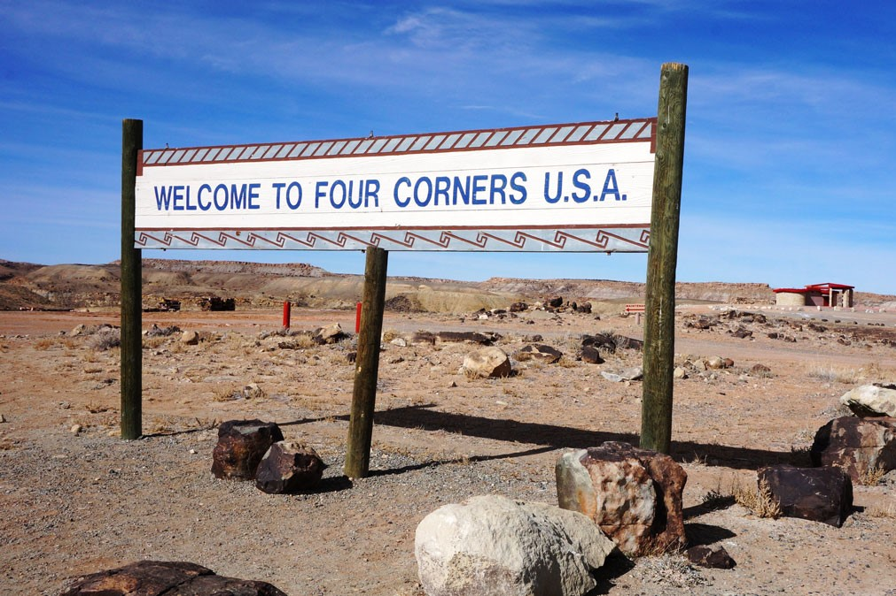

What and why the four corners region?
What is this region? This is the only spot in the entirety of the United States where the corners of four different states meet each other at a single point: Colorado, Utah, Arizona, and New Mexico. At the intersection of these states, at the southwestern-most part of Colorado, is the Four Corners Monument. The monument is currently a bronze disk embedded in granite where you can stand in four states at once!